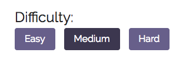
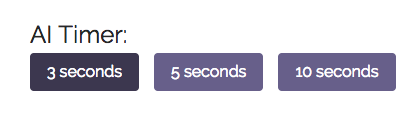
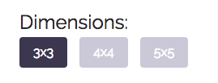
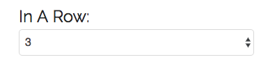
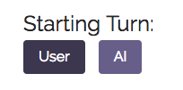
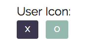

The player who succeeds in placing their 3 (defaults to 3 until other options available) of their marks in a horizontal, vertical or diagonal row wins the game.
The game supports three types of difficulty. Easy, Medium and Hard. With the difficulty set to easy, the AI randomly selects open positions to place it's marks. With the difficulty set to medium, the AI is playing with a scoring function 50% of the time and thus may result in mistakes when playing. With the difficulty set to hard, the AI will select only the best options that will result in either a victory or a tie.
The default setting is set at medium
The timer option is used to limit the AI in the time in which it gets to calculate the best possible state. The more time the AI gets, the more state it can potentially reach and thus will return a more optimal solution as the board size increases. Currently this version doesn't utilize a timer in it's MiniMax algorithm and thus will be released in the next version once Alpha Beta Pruning is fully implemented.
The default setting is set at 3 seconds
Different board size will be supported in future installations. Currently the time it takes to process best state is not optimal and needs to be reevaluate, prior to enabling the 4x4 and 5x5 options.
The default setting is set at 3x3 and other options will be enabled on future updates
Based on the size of the board, the user is able to select the amount of marks in a row that will designate as a victory. For board size of 3x3 the only option is 3. But as the board scales up, the amount of marks in a row will vary from n (square board dimension) (n -1), (n -2) to 3. Thus boards with a dimension of 5x5 will be able to select options of 5, 4, 3 in a row.
The default setting is set at 3 since the only available board size at the moment is 3x3
Sets the starting turn for each game. Either the user gets to start or the AI will start depending on the setting chosen.
The default setting is set to the User
Selects the icon in which the user decides to play with.
The default setting is set at X